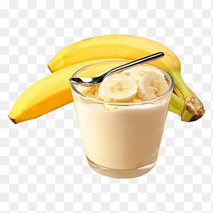

Recipe Time!
Banana Smoothie Recipe

This is the only banana smoothie recipe you’ll ever need!Read more here
Watch the tutorial down below!
Ingredients:
Steps to do:
- Roughly chop the banana and orange quarters, then add to a blender.
- Add yogurt and water (or milk).
- Turn the blender on and blend until creamy and smooth.
- Taste, and then adjust with honey if needed.